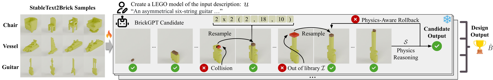
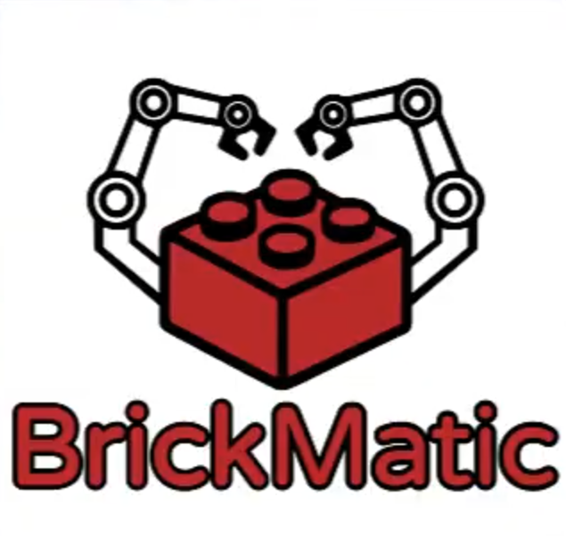
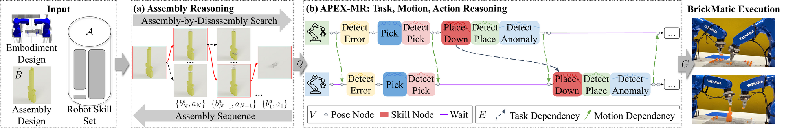

Bimanual robot assemblies driven by natural-language prompts (10× speed)
Overview
From a single natural-language prompt, Prompt-to-Product designs a physically buildable LEGO model and drives a bimanual robot to construct the real, tangible product — closing the loop from imagination to physical artifact.
Abstract
Creating assembly products demands significant manual effort and expert knowledge in 1) designing the assembly and 2) constructing the product. This paper introduces Prompt-to- Product, an automated pipeline that generates real-world assembly products from natural language prompts. Specifically, we leverage LEGO bricks as the assembly platform and automate the process of creating brick assembly structures. Given the user design requirements, Prompt-to-Product generates physically buildable brick designs, and then leverages a bimanual robotic system to construct the real assembly products, bringing user imaginations into the real world. We conduct a comprehensive user study, and the results demonstrate that Prompt-to-Product significantly lowers the barrier and reduces manual effort in creating assembly products from imaginative ideas.
Method
Prompt-to-Product decomposes the end-to-end problem into a generative designer (BrickGPT) and an assembly reasoner (BrickMatic), and hands the resulting plan to a bimanual robot for execution:


Fig. 4. BrickGPT couples an
autoregressive brick generator with a physics-aware rollback.
Given a prompt u, the model emits tokenized bricks
size (x, y, z); each step is checked
against the brick library I and a physics reasoner
S, and infeasible proposals (collisions, out-of-library)
trigger resampling until a stable design output B̂ is
produced.


Fig. 6. BrickMatic takes the design B̂, embodiment, and a robot skill set A. (a) Assembly-by-disassembly search recovers a feasible build order; (b) APEX-MR lifts that order into a task-, motion-, and action-level plan G with pick, place, and anomaly-detection skills coordinated across both arms. The plan is then executed by the bimanual system.
User Study Results
Interactive 3D brick designs generated by BrickGPT from user-study prompts. Drag to rotate.
BrickMatic Results
BrickMatic drives a bimanual robot through long-horizon brick assemblies with closed-loop error detection and recovery. Below we highlight a failure-detection episode followed by individual builds (10× speed).
Individual Demonstrations
Scroll horizontally →
Full Prompt-to-Product
Full Prompt-to-Product
Full Prompt-to-Product
Full Prompt-to-Product
BrickMatic-only
BrickMatic-only
BrickMatic-only
BrickMatic-only
BrickMatic-only
BrickMatic-only
Citation
If you find our work useful, please cite:
@article{liu2026prompt2product,
title = {Prompt-to-Product: Generative Assembly via Bimanual Manipulation},
author = {Liu, Ruixuan and Huang, Philip and Pun, Ava and Deng, Kangle
and Aggarwal, Shobhit and Tang, Kevin and Liu, Michelle
and Ramanan, Deva and Zhu, Jun-Yan and Li, Jiaoyang and Liu, Changliu},
journal = {IEEE Robotics \& Automation Magazine},
note = {Special Issue on Arts and Robotics},
year = {2026},
eprint = {2508.21063},
archivePrefix = {arXiv},
primaryClass = {cs.RO}
}